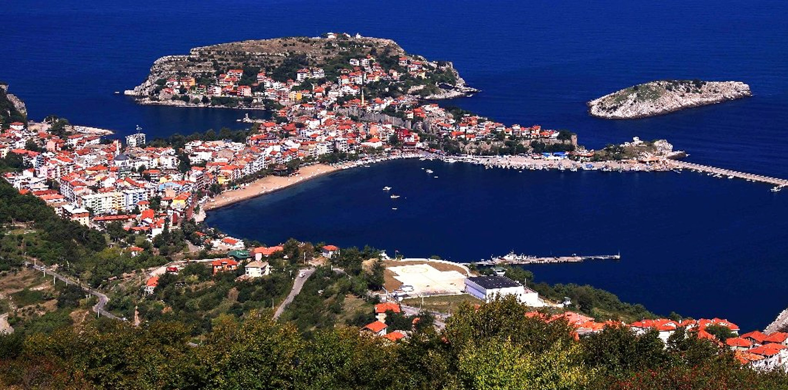
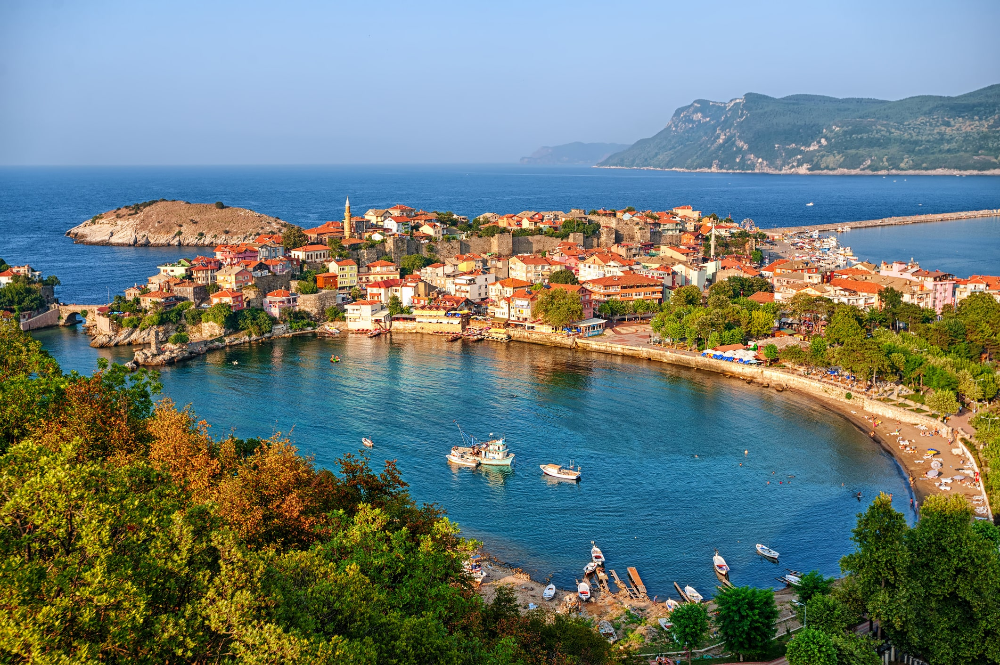

AMASRA
Amasra, Batı Karadeniz Bölgesinde, Bartın iline bağlı bir ilçedir.
Denize doğru uzanmış bir burun, burnun iki yanında korunaklı birer liman görevi gören iki koy ve ana karaya bağlı bağımsız adalarına sahip olan Amasra, antik dönem de Amastris 3000 yıllık tarihi, hem çekicilik[4] ve balıkçılığa[5] dayanan yerel sanatları, hem de kendini çevreleyen ormanlık alanlarına sahip bir yerleşim yeridir. Amasra hâlen özgün balık lokantaları, otelleri ve ev pansiyonlarına sahip bir turizm bölgesidir.
Amasra yaz aylarında özellikle Ankara'ya olan yakınlığı nedeniyle çok fazla yerli turist ağırlar.[kaynak belirtilmeli] Günübirlik ve konaklamalı birçok geziye ev sahipliği yapan Amasra'da Amasra plajı, Amasra müzesi, Gürcüoluk mağarası, Kuş Kayası yol anıtı, Göldere şelalesi, Ağlayan Ağaç, Direkli kaya, Amasra kalesi ve Amasra feneri en çok ziyaret alan yerlerdir. Sanatçı Barış Akarsu'nun memleketidir. Akarsu, Ocak 2007'de çıkardığı son kasetini Amasralılara ithaf etmiştir. Amasra'da Barış Akarsu heykeli bulunmaktadır.[6] Amasra'yı fetheden Fatih Sultan Mehmed'in heykeli de Amasra Müzesinin önünde bulunmaktadır.
TARİHÇE
Bölgede yapılan bilimsel araştırmalarda çıkan arkelojik kalıntılar ve Nümismatik veriler ışığında çıkan sonuçların Amasra tarihi hakkında ilk yerleşim tarihini M.Ö. 5000 - M.Ö. 8500 (Neolitik Çağ) yılları arasına, hatta Üst Palelotik (Eski Taş Devri'nin üçüncü ve son alt devri) tarihlendiren bölgede antik kalıntıları araştıran belgesel yönetmeni G.Tekin Gün Paflagonya bölgesi yerleşimleri adlı eserde geçmektedir. Kurucaşile ve Ulus ilçelerinde tarih öncesi kaya üzerine Tamga, betimlemeleri Türkler’in Orta Asya dan Anadolu göçlerini desteklediği tarih öncesi varlıklarının izleri olduğunu, üzerinde bilimsel çalışmaların neticesinde daha fazla verilere ulaşılabileceği sanılmaktadır. Amasra tarihi hakkındaki en net bilgiler bölgede uzun süre arkeolojik araştıma yapan Prof.Dr. Semavi Eyice Küçük Amasra Tarihi ve Eski. Eserleri Kılavuzu eserinde geçmektedir. 1965 yılında yayınlanan eserde Amasra (Küçük Amasra tarihi) sırasıyla Amasra tarihinin başlangıcı, İyon kolonizasyonu, İranlılar ve İskender'in seferi, Roma İmparatorluğu, Hıristiyanlık dönemi Amasra, Bizans idaresinde Amasra, Cenovalılar, Fatih ve Amasra, Amasra'nın fethi, Türk idaresinde Amasra, Amasra'nın eski eserleri olarak sıralanabilir.[8]

Osmanlı dönemi
13. yüzyılda Cenevizliler tarafından ele geçirilen Amasra'ya Fatih Sultan Mehmet liderliğindeki Osmanlı İmparatorluğu orduları Ekim 1460'ta bir sefer düzenler. Rivayete göre Fatih Sultan Mehmet şehre hakim bir tepeye geldiğinde hayranlığını belli etmek için şu sözü sarf etmiştir;
« "Lala, lala!, Çeşm-i Cihan bu mu ola" ve kaleye haber gönderir : " Bu kadar güzel bir yere zarar vererek almak istemem kalenin anahtarını bana getiriniz. »
Rivayetin devamına göre, bu olay üzerine Amasra Kalesi komutanı anahtarı Fatih'in bulunduğu tepeye getirir ve şehir savaşmadan alınmış olur. Şehir ele geçirildikten sonra Karabük - Eflani yöresinde yaşamakta olan Kıpçak Türkler'ini buraya yerleştirilir. Ardından yörede yaşayan Rumlar'ın büyük bir kısmı ise İstanbul'a göç etmeye zorlanmıştır.